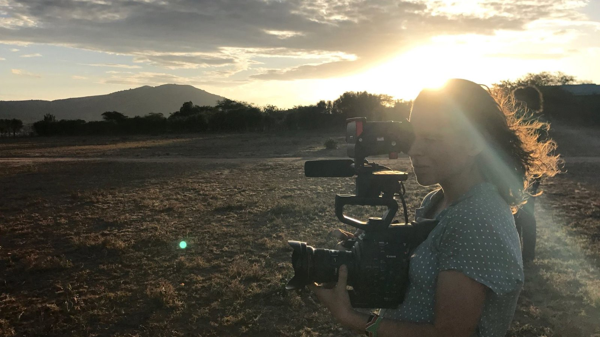

ABOUT
Samantha André
Samantha André is an independent director, cinematographer, and editor with a special focus on women's rights and social issues around the world. She has directed, produced, or edited projects for VICE, TWITTER, APPLE TV, PBS, and THE FRONT.
She is currently working on finishing her first feature documentary, Mary's Way. Filmed over the course of five years, it is the portrait of one girl's journey to help bring an end to female genital mutilation and child marriage in her Kenyan community. A short version of her film was screened in New York to raise awareness for FGM in partnership with the United Nations. Her work has led her to cover character driven stories such as the LGBT refugees in Europe, police brutalities for the ACLU, climate change in an indigenous Alaskan village, child marriage in Kenya, and disability activism in the US.
When Samantha is not working on a documentary, she can be found hiking mountains, biking, or playing soccer. She prides herself in capturing human emotion and intimate moments in her films by creating a real connection with the amazing people in front of her lens.
Email: sam@samandre.com